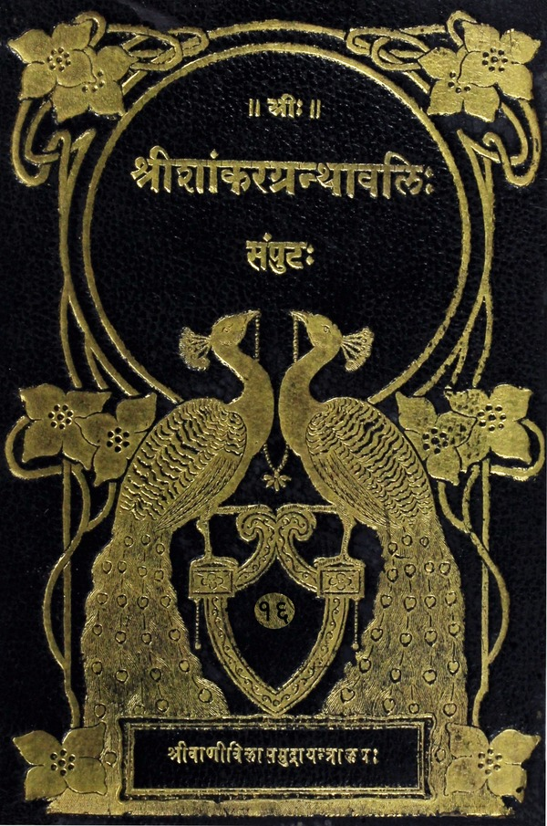

श्रीशांकरग्रन्थावलिः
संपुटः १ - २०
Home
About
Concluding Note
T. K. Balasubramaniam
Superhuman efforts of a savant
Prema Nandakumar
Views on the Sri Vani Vilas Press
His (Sri TKB’s) aim
Volumes
प्रबोधसुधाकर
स्वात्मप्रकाशिका
मनीषापञ्चकम्
अद्वैतपञ्चरत्नम्
निर्वाणषट्कम्
अद्वैतानुभूति
ब्रह्मानुचिन्तनम्
प्रश्नोत्तररत्नमालिका
सदाचारानुसंधानम्
योगतारावली
उपदेशपञ्चकम्
धन्याष्टकम्
जीवमुक्तानन्दलहरी
अनात्मश्रीविगर्हणप्रकरणम्
स्वरूपानुसंधानम्
यतिपञ्चकम्
हस्तामलकोयभाष्यम्
पञ्चीकरणम्
तत्त्वोपदेश
एकश्लोकी
मायापञ्चकम्
प्रोढानुभूतिः
ब्रह्मज्ञानावलीमाला
लघुवाक्यवृत्तिः
निर्वाणमञ्जरी

प्रकरण प्रबन्धावलिः
(Miscellaneous Prakaranas)